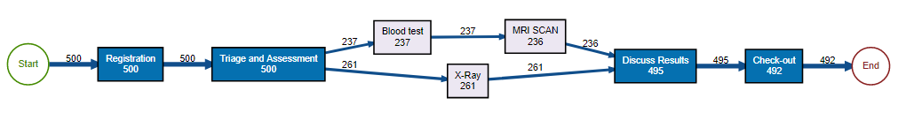
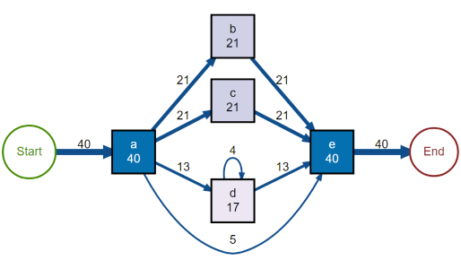
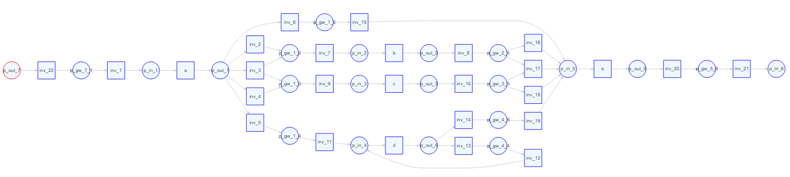

Provides the Heuristics Miner algorithm in bupaR.
This is a basic usage example discovering the Causal net of the patients event log:
library(heuristicsmineR)
library(eventdataR)
data(patients)
# Dependency graph / matrix
dependency_matrix(patients)
# Causal graph / Heuristics net
causal_net(patients)
This discovers the Causal net of the built-in L_heur_1 event log that was proposed in the Process Mining book:
# Efficient precedence matrix
m <- precedence_matrix_absolute(L_heur_1)
as.matrix(m)
# Example from Process mining book
dependency_matrix(L_heur_1, threshold = .7)
causal_net(L_heur_1, threshold = .7)
The Causal net can be converted to a Petri net (note that there are some uneccesary invisible transition that are not yet removed):
# Convert to Petri net
library(petrinetR)
cn <- causal_net(L_heur_1, threshold = .7)
pn <- as.petrinet(cn)
render_PN(pn)
The Petri net can be further used, for example for conformance checking through the pm4py package (Note that the final marking is currently not saved in petrinetR):